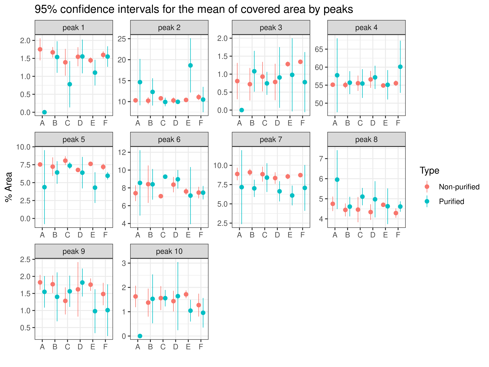
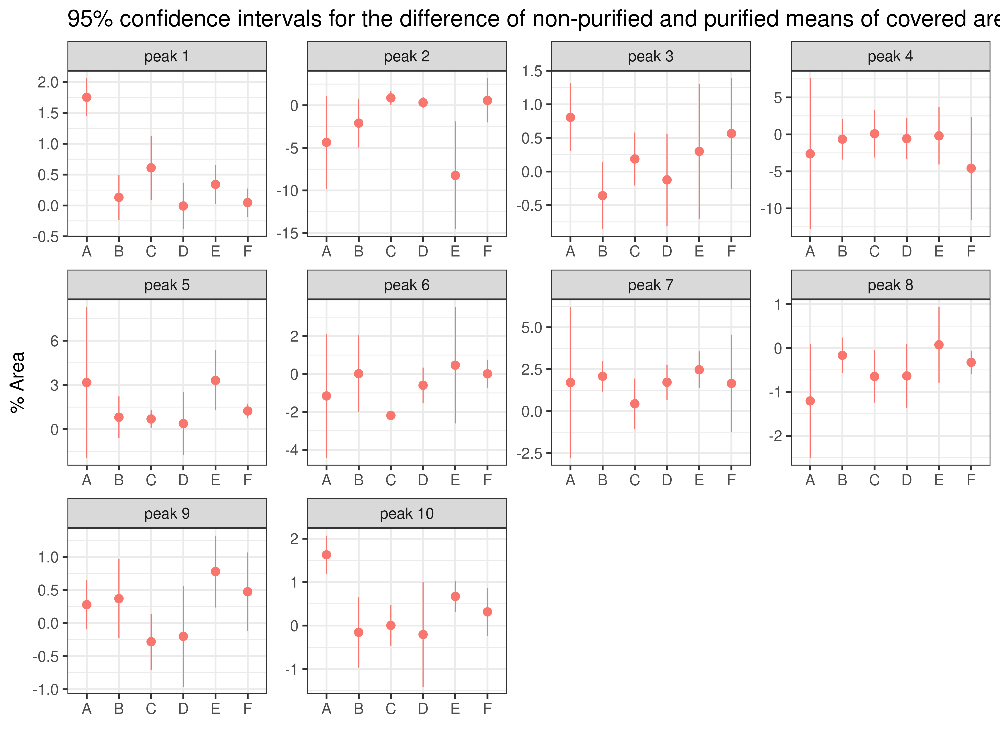
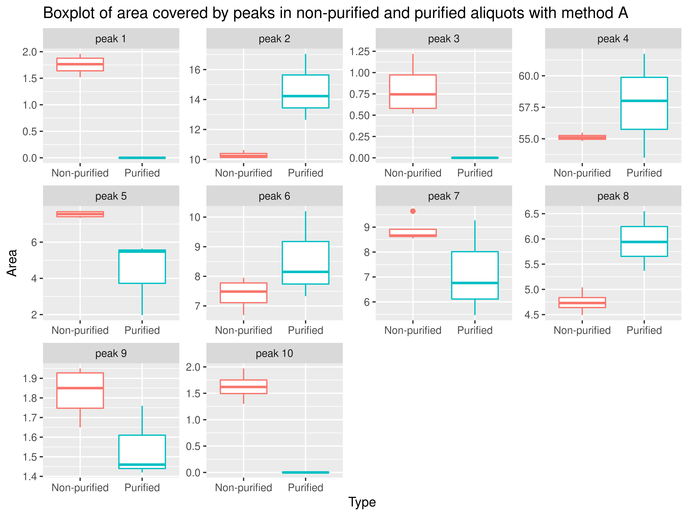
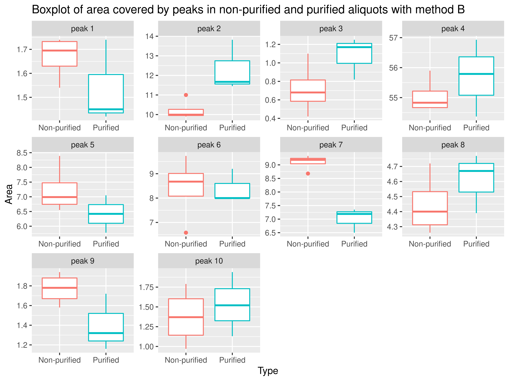
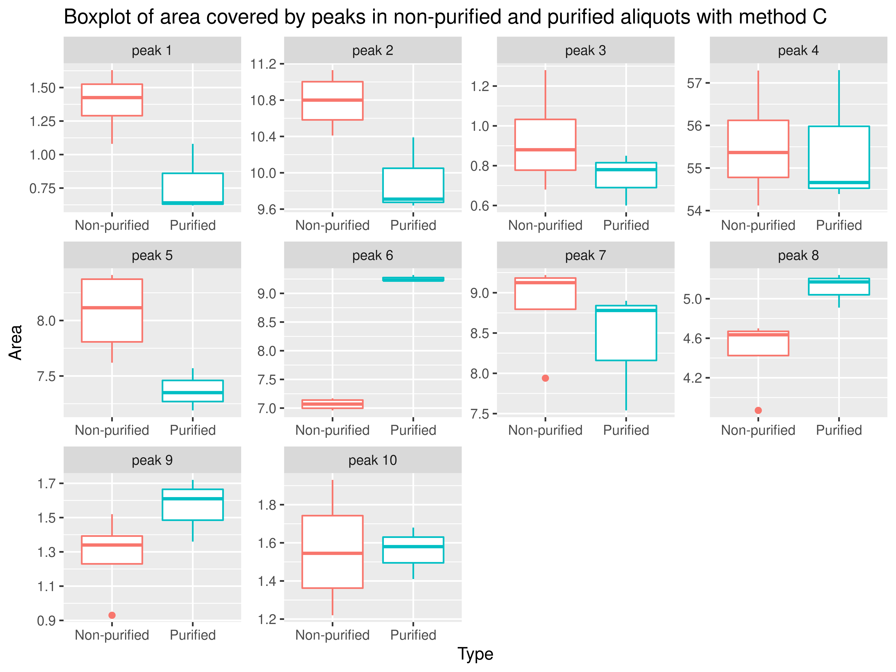
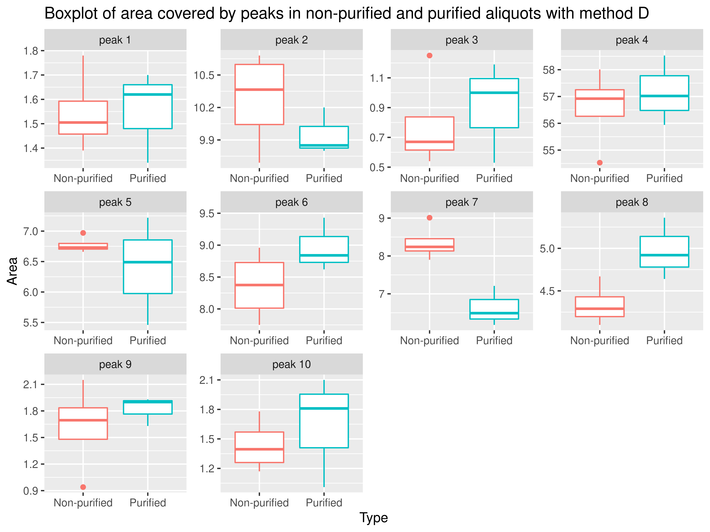
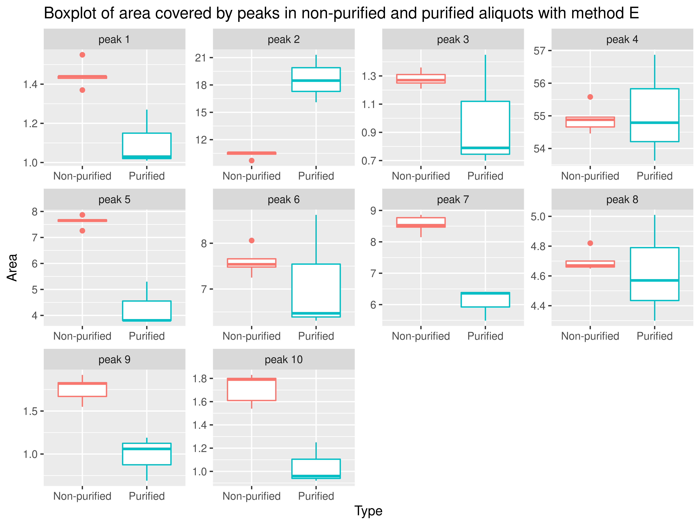
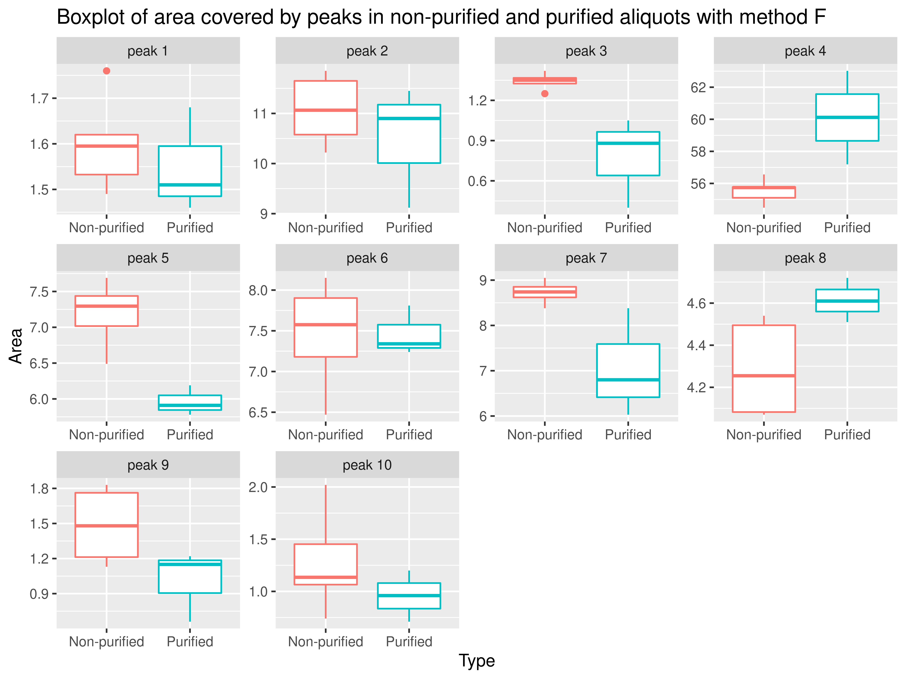
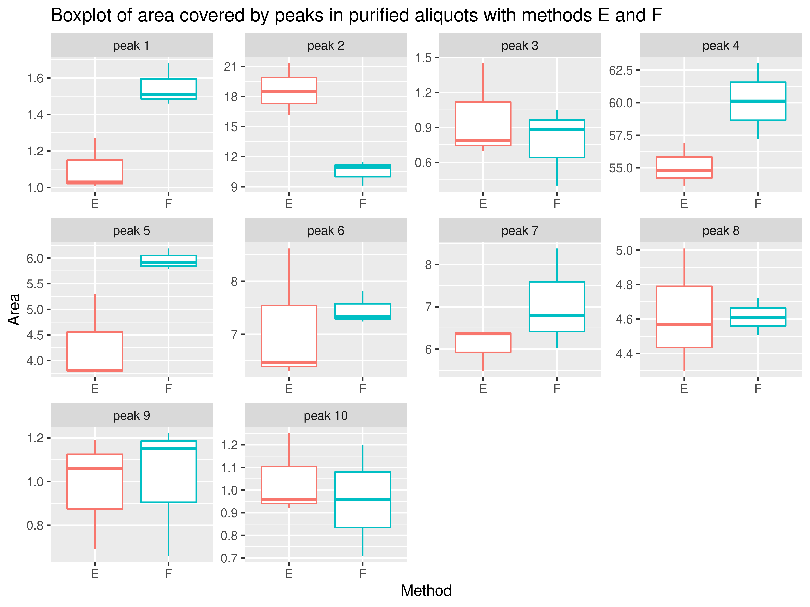

Method comparison
2020-07-28
Confidence intervals for means
Filter

Confidence intervals for the difference of means of non-purified and purified aliquots
Filter

Comparison of non-purified and purified aliquots
As the sample size per group is very small (from 3 to 6) instead of using a t-test we use the Mann-Whitney test, a non-parametric method to compare the ranks.
Method A
| Peak | group1 | group2 | n1 | n2 | statistic | p |
|---|---|---|---|---|---|---|
| peak 1 | Non-purified | Purified | 4 | 3 | 12 | 0.0436 |
| peak 2 | Non-purified | Purified | 4 | 3 | 0 | 0.0571 |
| peak 3 | Non-purified | Purified | 4 | 3 | 12 | 0.0436 |
| peak 4 | Non-purified | Purified | 4 | 3 | 4 | 0.6290 |
| peak 5 | Non-purified | Purified | 4 | 3 | 12 | 0.0571 |
| peak 6 | Non-purified | Purified | 4 | 3 | 2 | 0.2290 |
| peak 7 | Non-purified | Purified | 4 | 3 | 9 | 0.4000 |
| peak 8 | Non-purified | Purified | 4 | 3 | 0 | 0.0571 |
| peak 9 | Non-purified | Purified | 4 | 3 | 11 | 0.1140 |
| peak 10 | Non-purified | Purified | 4 | 3 | 12 | 0.0436 |
Thus, there are significant differences between the areas of peaks 1, 3 and 10.

Method B
| Peak | group1 | group2 | n1 | n2 | statistic | p |
|---|---|---|---|---|---|---|
| peak 1 | Non-purified | Purified | 4 | 3 | 8.5 | 0.4760 |
| peak 2 | Non-purified | Purified | 4 | 3 | 0.0 | 0.0571 |
| peak 3 | Non-purified | Purified | 4 | 3 | 1.0 | 0.1140 |
| peak 4 | Non-purified | Purified | 4 | 3 | 5.0 | 0.8570 |
| peak 5 | Non-purified | Purified | 4 | 3 | 10.0 | 0.2290 |
| peak 6 | Non-purified | Purified | 4 | 3 | 7.0 | 0.8580 |
| peak 7 | Non-purified | Purified | 4 | 3 | 12.0 | 0.0571 |
| peak 8 | Non-purified | Purified | 4 | 3 | 3.0 | 0.4000 |
| peak 9 | Non-purified | Purified | 4 | 3 | 10.0 | 0.2290 |
| peak 10 | Non-purified | Purified | 4 | 3 | 5.0 | 0.8570 |
Thus, there are no significant differences between the areas for all the peaks.

Method C
| Peak | group1 | group2 | n1 | n2 | statistic | p |
|---|---|---|---|---|---|---|
| peak 1 | Non-purified | Purified | 4 | 3 | 11.5 | 0.0745 |
| peak 2 | Non-purified | Purified | 4 | 3 | 12.0 | 0.0571 |
| peak 3 | Non-purified | Purified | 4 | 3 | 9.0 | 0.4000 |
| peak 4 | Non-purified | Purified | 4 | 3 | 6.0 | 1.0000 |
| peak 5 | Non-purified | Purified | 4 | 3 | 12.0 | 0.0571 |
| peak 6 | Non-purified | Purified | 4 | 3 | 0.0 | 0.0571 |
| peak 7 | Non-purified | Purified | 4 | 3 | 10.0 | 0.2290 |
| peak 8 | Non-purified | Purified | 4 | 3 | 0.0 | 0.0571 |
| peak 9 | Non-purified | Purified | 4 | 3 | 1.0 | 0.1140 |
| peak 10 | Non-purified | Purified | 4 | 3 | 6.0 | 1.0000 |
Thus, there are no significant differences between the areas for all the peaks.

Method D
| Peak | group1 | group2 | n1 | n2 | statistic | p |
|---|---|---|---|---|---|---|
| peak 1 | Non-purified | Purified | 4 | 3 | 6 | 1.0000 |
| peak 2 | Non-purified | Purified | 4 | 3 | 8 | 0.6290 |
| peak 3 | Non-purified | Purified | 4 | 3 | 6 | 1.0000 |
| peak 4 | Non-purified | Purified | 4 | 3 | 4 | 0.6290 |
| peak 5 | Non-purified | Purified | 4 | 3 | 8 | 0.6290 |
| peak 6 | Non-purified | Purified | 4 | 3 | 3 | 0.4000 |
| peak 7 | Non-purified | Purified | 4 | 3 | 12 | 0.0571 |
| peak 8 | Non-purified | Purified | 4 | 3 | 1 | 0.1140 |
| peak 9 | Non-purified | Purified | 4 | 3 | 5 | 0.8570 |
| peak 10 | Non-purified | Purified | 4 | 3 | 4 | 0.6290 |
Thus, there are no significant differences between the areas for all the peaks.

Method E
| Peak | group1 | group2 | n1 | n2 | statistic | p |
|---|---|---|---|---|---|---|
| peak 1 | Non-purified | Purified | 5 | 3 | 15 | 0.0358 |
| peak 2 | Non-purified | Purified | 5 | 3 | 0 | 0.0357 |
| peak 3 | Non-purified | Purified | 5 | 3 | 10 | 0.5710 |
| peak 4 | Non-purified | Purified | 5 | 3 | 8 | 1.0000 |
| peak 5 | Non-purified | Purified | 5 | 3 | 15 | 0.0357 |
| peak 6 | Non-purified | Purified | 5 | 3 | 10 | 0.5710 |
| peak 7 | Non-purified | Purified | 5 | 3 | 15 | 0.0357 |
| peak 8 | Non-purified | Purified | 5 | 3 | 10 | 0.5710 |
| peak 9 | Non-purified | Purified | 5 | 3 | 15 | 0.0357 |
| peak 10 | Non-purified | Purified | 5 | 3 | 15 | 0.0357 |
Thus, there are significant differences between areas of peaks 1, 2, 5, 7, 9 and 10.

Method F
| Peak | group1 | group2 | n1 | n2 | statistic | p |
|---|---|---|---|---|---|---|
| peak 1 | Non-purified | Purified | 6 | 3 | 12.0 | 0.5170 |
| peak 2 | Non-purified | Purified | 6 | 3 | 12.0 | 0.5480 |
| peak 3 | Non-purified | Purified | 6 | 3 | 18.0 | 0.0238 |
| peak 4 | Non-purified | Purified | 6 | 3 | 0.0 | 0.0238 |
| peak 5 | Non-purified | Purified | 6 | 3 | 18.0 | 0.0238 |
| peak 6 | Non-purified | Purified | 6 | 3 | 10.0 | 0.9050 |
| peak 7 | Non-purified | Purified | 6 | 3 | 17.5 | 0.0381 |
| peak 8 | Non-purified | Purified | 6 | 3 | 2.0 | 0.0919 |
| peak 9 | Non-purified | Purified | 6 | 3 | 15.0 | 0.1670 |
| peak 10 | Non-purified | Purified | 6 | 3 | 13.0 | 0.3810 |
Thus, there are significant differences between areas of peaks 3, 4, 5 and 7.

Comparison of non-purified aliquots
Again, as the sample size is very small (from 3 to 6) instead of using an ANOVA test we use the Kruskal-Wallis test, a non-parametric method to compare the ranks.
| Peak | n | statistic | df | p |
|---|---|---|---|---|
| peak 1 | 27 | 12.143 | 5 | 0.0329 |
| peak 2 | 27 | 8.220 | 5 | 0.1450 |
| peak 3 | 27 | 17.736 | 5 | 0.0033 |
| peak 4 | 27 | 5.101 | 5 | 0.4040 |
| peak 5 | 27 | 13.365 | 5 | 0.0202 |
| peak 6 | 27 | 10.510 | 5 | 0.0620 |
| peak 7 | 27 | 8.369 | 5 | 0.1370 |
| peak 8 | 27 | 11.481 | 5 | 0.0426 |
| peak 9 | 27 | 9.943 | 5 | 0.0769 |
| peak 10 | 27 | 6.796 | 5 | 0.2360 |
We observe significant differences between at least two reference samples in peaks 1, 3, 5 and 8.
Filter
Comparing the referece samples by pairs we can observe:
- For peak 3, there are significant differences between the reference samples A and F and B and F.
- For peak 5, there are significant differences between the reference samples C and D.
Comparison between purified aliquots with methods E and F
Again, as the sample size per group is very small (from 3 to 6) instead of using a t-test we use the Mann-Whitney test.
| Peak | group1 | group2 | n1 | n2 | statistic | p |
|---|---|---|---|---|---|---|
| peak 1 | E | F | 3 | 3 | 0.0 | 0.100 |
| peak 2 | E | F | 3 | 3 | 9.0 | 0.100 |
| peak 3 | E | F | 3 | 3 | 5.0 | 1.000 |
| peak 4 | E | F | 3 | 3 | 0.0 | 0.100 |
| peak 5 | E | F | 3 | 3 | 0.0 | 0.100 |
| peak 6 | E | F | 3 | 3 | 3.0 | 0.700 |
| peak 7 | E | F | 3 | 3 | 2.0 | 0.400 |
| peak 8 | E | F | 3 | 3 | 4.0 | 1.000 |
| peak 9 | E | F | 3 | 3 | 4.0 | 1.000 |
| peak 10 | E | F | 3 | 3 | 5.5 | 0.825 |
Thus, there is no significant difference between methods E and F.

Comparison of purified aliquots (all methods)
Again, as the sample size is very small (from 3 to 6) instead of using an ANOVA test we use the Kruskal-Wallis test.
| Peak | n | statistic | df | p |
|---|---|---|---|---|
| peak 1 | 18 | 14.440 | 5 | 0.0130 |
| peak 2 | 18 | 14.331 | 5 | 0.0136 |
| peak 3 | 18 | 8.967 | 5 | 0.1100 |
| peak 4 | 18 | 6.965 | 5 | 0.2230 |
| peak 5 | 18 | 13.113 | 5 | 0.0223 |
| peak 6 | 18 | 9.786 | 5 | 0.0815 |
| peak 7 | 18 | 7.316 | 5 | 0.1980 |
| peak 8 | 18 | 11.573 | 5 | 0.0411 |
| peak 9 | 18 | 12.656 | 5 | 0.0268 |
| peak 10 | 18 | 12.403 | 5 | 0.0297 |
We observe significant differences between at least two methods in peaks 1, 2, 5, 8, 9 and 10.
Filter
Comparing the methods by pairs we can observe that there are significant diferences between methods C and E only for peak 5.
Protein recovery comparison (Methods E and F)
Once again we use the Mann-Whitney test due to the versy small sample sizes.
| group1 | group2 | n1 | n2 | statistic | p |
|---|---|---|---|---|---|
| E | F | 3 | 3 | 0 | 0.1 |
Thus there is a significant difference for alpha = 0.1 but not for alpha = 0.05.

Regardin the plot, it seems that there is a clear difference betwen the two methods but this difference is not significant for alpha = 0.05. Using t-test, that has more power we observe below a significant difference, however with such a small sample we can not guarantee the normality condition requiered by this test.
| group1 | group2 | n1 | n2 | statistic | df | p |
|---|---|---|---|---|---|---|
| E | F | 3 | 3 | -23.3 | 2.203 | 0.0011 |